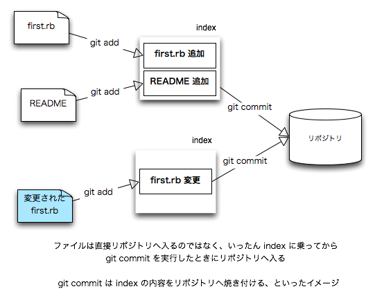

git はバージョン管理システムの 1 つ。
バージョン管理システムは、プログラムのソースファイルやテキストファイルの変更履歴 (バージョン/リビジョン) を管理します。
あるファイルをバージョン管理に頼らずに管理しようとした場合、変更前にファイルのバックアップを作ってから、ファイルを変更するでしょう。何らかの手違いがあって、ファイルを元に戻したいとき、予め作成しておいたバックアップファイルをコピーすることで元へ戻すでしょう。
hello.rb を変更しようと思ったら
% cat hello.rb
#!/usr/bin/env ruby
puts 'hello'
変更の前にファイルのバックアップを作成してから
% cp hello.rb hello.rb.bak
変更を始めると安心です
% vi hello.rb
hello.rb を壊してしまっても元に戻せます
% cp hello.rb.bak hello.rb
もし hello.rb を壊してしまい hello.rb.bak を作成し忘れていたら! 恐いですねこの辺、バージョン管理システムを使うと、バージョン管理システムが指示通りよしなに計らってくれますので、プログラム修正が楽になり、かつ安心してぶっ壊すことができます。
例えば git を使っていたなら hello.rb をぶっ壊しても
% git checkout -- hello.rb
これだけで元通り!バージョン管理システムの利点は他にも
オープンソースとして開発/公開されている、様々なバージョン管理システムを、ほどんどの OS で利用可能です。
今回、この中から Git を学びます。理由は
皆様の作ったプログラムは github で公開することになるでしょう。
ユーザ名とメールアドレスを git に教えてあげます。
$ git config --global user.name "Takumi KINJO"
$ git config --global user.email "kinjo@cr.ie.u-ryukyu.ac.jp"次に無視リストを作成しておきましょう。
ログファイルや簡単なバックアップファイル、オブジェクトファイルといった類のファイルはバージョン管理下に含めないのが一般的です。
$ git config --global core.excludesfile "$HOME/.gitignore"
$ vi ~/.gitignore
*.bak
*.log
#*#
*~
*.o
.*.swp適当なディレクトリを作成し勉強用の仮プロジェクトを始めよう。
$ mkdir ~/hago
$ cd ~/hagoあとは簡単、
$ git initcvs, subversion では index ってのをあんま意識しないが、git 勉強してて index を意識しないといけないことが分かった。
add はファイルを index へ追加します
$ vi first.rb # <= 内容なんでもよいよ、適当に作ってくだちい
$ git add first.rbcvs や subversion, もしくは mercurial の add とは様相が違う。なんでかというと、ファイルを変更した後も変更したファイルに対して git add せないかん。
git add は index に対してファイルの追加を行う
commit は index の内容をリポジトリに焼き付けるおっと、そう、だからまだリポジトリには登録されてないぞ。commit をせな (commit は後で)。
$ vi README # <= 内容は適当にどぞ
$ git statusfirst.rb はさっき add したからね。first.rb と、まだ git add していない README とを見比べてみよう。
# On branch master
#
# Initial commit
#
# Changes to be committed:
# (use "git rm --cached <file>..." to unstage)
#
# new file: first.rb
#
# Untracked files:
# (use "git add <file>..." to include in what will be committed)
#
# READMEgit status はREADME はコミットに含まれませんよ。README をコミットしたければ git add してね、とおっしゃっております。
では
$ git add README英語がなんだって? 自慢だがセンターの英語の点数は 8(ry
$ git help add
$ git help statusgit help だと英語ですが、日本語訳がどっかにあるはず。
どなたか発見してやってくださいindex の内容をリポジトリに焼き付けます。
$ git commit -m '最初のコミット'実際のプログラム修正では、これでまず一段落。コーヒーでも飲みに行こうか。
変更したファイルを commit するとき、その都度 git add するのは面倒なので、
$ git commit -a -m '...'とすることもできますが、ここに落し穴が、
まだリポジトリに無いファイルについては、初回は git add で登録することリポジトリに対して誰が何を行ったのか、 git log を実行してチェックできます。
$ git logあるファイルを git add したけど取り消したい場合 git reset を使います。やってみよう。
$ vi TODO
$ git add -A # <= まだ git add していないファイルを全部 add
$ git status
# On branch master
# Changes to be committed:
# (use "git reset HEAD <file>..." to unstage)
#
# new file: TODO
#ここで、やっぱり TODO の git add を取り消したいとします。
$ git reset TODO
$ git status
# On branch master
# Untracked files:
# (use "git add <file>..." to include in what will be committed)
#
# TODO取り消せました。
ただし、初回 git commit の前だと git reste で git add を打ち消せない。git rm でファイルごと消すしかない。
ワーキングツリーで行われた操作を記録することが git を始めとするバージョン管理システムの売りです。
でも、この操作はそれらの記録を無かったことにします消し飛んだ記録は絶対に戻らないので、この操作は多用しない方がいいです。
直前のコミットを取り消すには、例えば以下のようにタイプします。
$ git reset HEAD^やってみよう。
$ vi first.rb # <= 適当に内容をぶちこわし
$ git commit -a -m 'Oops!'
$ git reset HEAD^どうですか? ログを確認してみよう。
$ git logファイルは?
$ git statusだた、初回コミットだけは git reset HEAD^ で取り消せないようです。
この機能は今のとこ git だけに搭載されている。mercurial も commit 取り消しはできるが、直前の 1 commit しか取り消しできない。
subversion で commit の取り消しに近いことはできますが、ログをまるごと消し飛ばしてしまう操作はできないようです。
first.rb が壊れたままです。このままではいけないので、
$ git checkout -- first.rbどうやら -- はつけた方がいいみたいです。
ワーキングツリー中の全ての変更を破棄するには、以下のようにタイプします。
$ git checkout -- .
ワーキングツリー proj を subproj へコピーします。
$ cd ..
$ ls
proj/ ...
$ git clone ./proj ./subprojこれでリポジトリ(= ワーキングツリー) は 2 つに分散されました。
./subproj は ./proj からコピーされたことをどこかで覚えているようです。(./subproj/.git のどこかに保存されているのだろうか)
さて、 ./subproj の中で作業を行い、それらの変更を親 proj へ反映してみよう。
そんなとき git pushさて使ってみよう。
$ cd ./subproj
$ vi README # <= 適当にどぞ
$ git commit -a -m '...'
$ git push
$ cd ../proj
$ cat README # <= 変更した内容通りになってますか?子ツリーで git push する前に、親ツリーで更新が行われてしまった場合、git push はエラーを表示して失敗するでしょう。
例えば、こんな感じで、
$ vi README
### 最初の行に適当になんか書いて ###
$ git commit -a -m '...'
$ cd ../subproj
$ vi README
### 最初の行に別の何かを適当に書いて ###
$ git commit -a -m '...'
$ git push
To /home/kinjo/workspace/./proj
! [rejected] master -> master (non-fast forward)
error: failed to push some refs to '/home/kinjo/workspace/./proj'
To prevent you from losing history, non-fast-forward updates were rejected
Merge the remote changes before pushing again. See the 'non-fast forward'
section of 'git push --help' for details.このような場合、いったん git pull で変更点をダウンロードしてからgit push を実行します。
基本的には、親の変更をダウンロードするために git pull をします。
$ cd ../subproj
$ git pullなのですが、現在のツリーと親ツリーとで内容が異なる場合、恐怖の衝突 (conflict) が起こります。
前の節からの続きであれば、README は多分こんな感じで衝突するでしょう。
$ cat README
<<<<<<< HEAD
parent
=======
child
>>>>>>> c0d0845c95b7522f6c146521d805734361d1b007親の変更は破棄して、こんな感じに衝突箇所を直してあげましょう。
$ cat README
child衝突箇所を直した後は git commit を忘れずに!
$ git commit -a -m 'merged'これで git pull は完了です。この後であれば git push できるようになります。
$ git pushさ、親ワーキングツリーの README はどうなりましたか?
$ cd ../proj
$ cat READMEsubversion と mercurial のブランチは、まるっとコピーするイメージなので、git branch のイメージとは異なるかと思います。

さ、 branch を作りましょう。
$ cd ../proj
$ git branch hagohago ブランチが作成されました。
git branch とだけタイプするとブランチの一覧が表示されます。
$ git branch
hago
* master出力から、今私たちが作業していたブランチは master だということが分かります。(アスタリスクでマークされています)
master は最初から用意されたデフォルトのブランチです。
hago ブランチに切り替えて変更を行ってみよう。
まず、 hago ブランチへ切り替え、
$ git checkout hago
$ git branch
* hago
masterhago ブランチへ切り替わりましたので、README, first.rb に変更を加えてみます。git commit も忘れずに!
$ vi README
$ vi first.rb
$ git commit -a -m 'hago hago'ここでまた master ブランチへ戻り、 README, first.rb の内容を確認しましょう。元の内容が維持されていますか?
$ git checkout master
$ cat README
$ cat first.rbブランチは、いまのバージョンと別なバージョンを作成したいときに使います。(元のソースを維持したまま、ソースを弄くりたい場合に最適)
hago ブランチで行った修正を master に取り込みましょう。
$ git checkout master
$ git merge hagoもし git merge hago の前に master ブランチで変更があった場合、例によって衝突が発生するケースもあります。
そのような場合、先にやった通り、衝突のあったファイルを編集して直してあげる必要があります。(衝突のあったファイルは git status で確認できます)
衝突を解決した後は、 git commit を忘れずに!
入門GIT